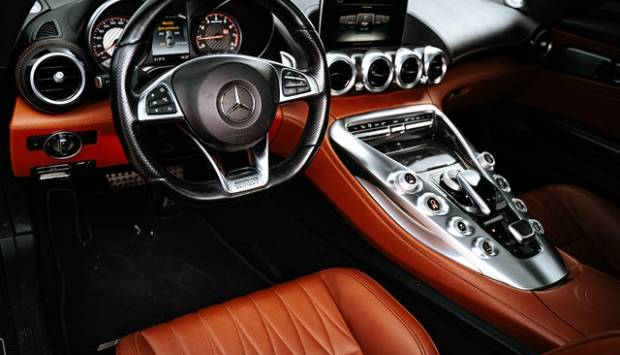
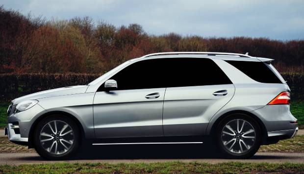
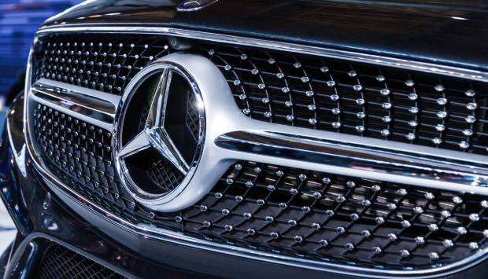
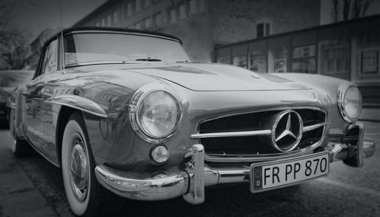

רכבי ספורט
- 
רכבי יוקרה
-
לשטח
- 
למשפחה
- 
מרצדס
- 
מאז ומתמיד
האבות המייסדים של מרצדס היו מהפכנים טכנולוגיים, והמורשת שלהם לממשיכי דרכם הייתה כזו של מובילות טכנולוגית. מרצדס מוגדרת על ידי החתירה הבלתי פוסקת לחדשנות מאז המכונית הראשונה בשנת 1886 ועד היום, והתרומה שלה מתבטאת באלפי פטנטים וחידושים בתחומי מערכות ההנעה, הביצועים, הנוחות, הטכנולוגיות ירוקות והבטיחות.
החידושים הטכנולוגיים של מרצדס, החל בסוף המאה התשע-עשרה ועד ימים אלו, מוכיחים את עצמם שוב ושוב ומאומצים בהמשך על ידי עולם הרכב כולו.
מרצדס רואה בבטיחות הנוסעים והמשתמשים בדרך ערך עליון, ותפיסה זו הובילה לחידושים ופריצות דרך רבות בתחום הבטיחות, שיושמו לראשונה במכוניות מרצדס והפכו בהמשך לסטנדרט בתעשיית הרכב.
בין החידושים של מרצדס בתחום הבטיחות שהפכו לסטנדרט בתעשיית הרכב ניתן למנות את הפטנט הראשון לכרית אוויר ברכב (1971), מערכת למניעת נעילת גלגלים בעת בלימה ABS )1978) , ומערכת בקרת היציבות ESP שהומצאה על ידי מרצדס בשנת 1995.
המורשת של מרצדס בנץ משתרעת על פני למעלה מ-125 שנים בהם ביססה החברה את מעמדה כאחת מיצרניות הרכב המובילות בעולם. מרצדס בנץ מילאה תפקיד מרכזי בהיסטוריה של תעשיית הרכב והייתה ועודנה חלוצה בתחומי הטכנולוגיה, הבטיחות, העיצוב, הספורט מוטורי והקיימות.
המורשת של מרצדס היא מורשת של חדשנות, איכות ומובילות טכנולוגית ועיצובית, והיא מתבטאת בכל אחד ואחד מהדגמים שלה, מאז 1886 ועד היום.
רכבי ספורט
רכבי יוקרה
לשטח
למשפחה
מרצדס
מאז ומתמיד
מוקד מכירות מרצדס-בנץ
9996*
שירות לקוחות:
טל. 03-9153030
מרצדס-בנץ באינסטגרם
כל העדכונים, החידושים, האירועים, הדגמים. כל מה שמרצדס.